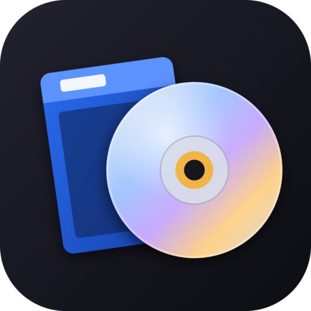
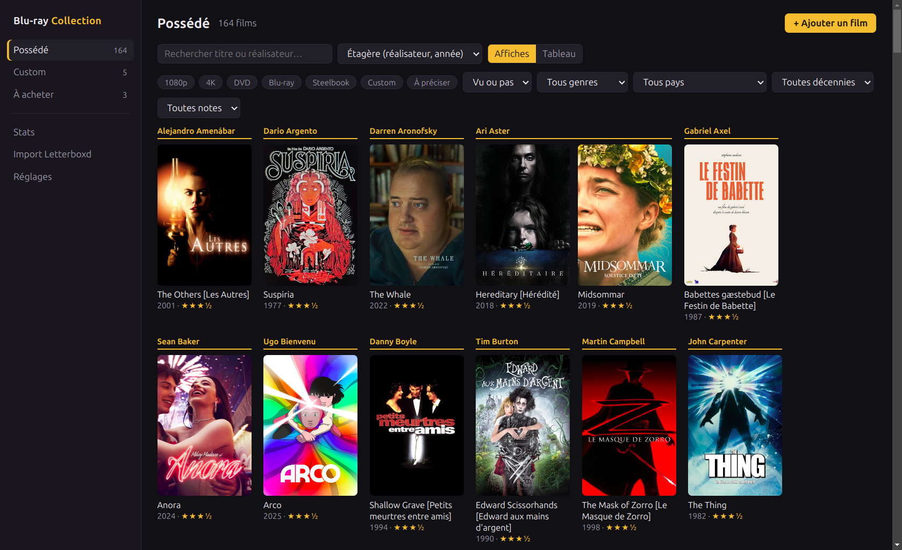
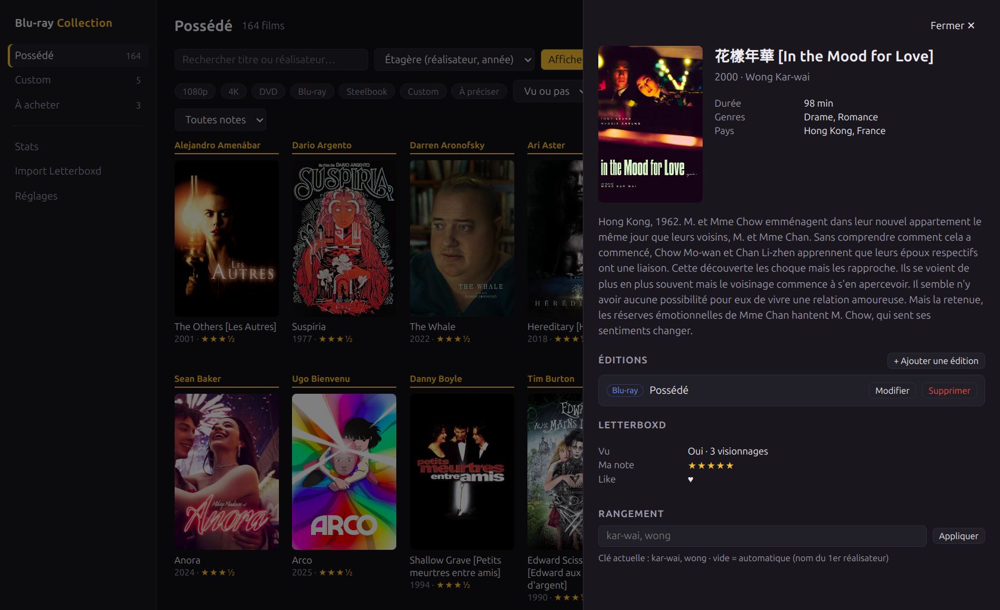
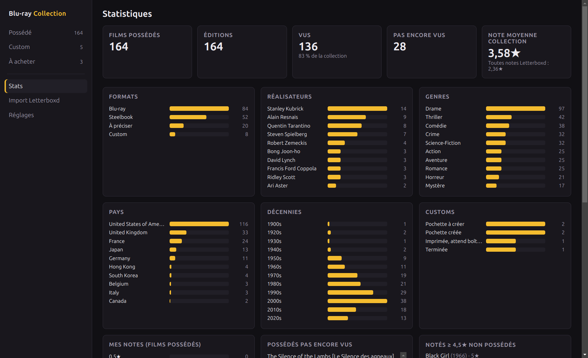
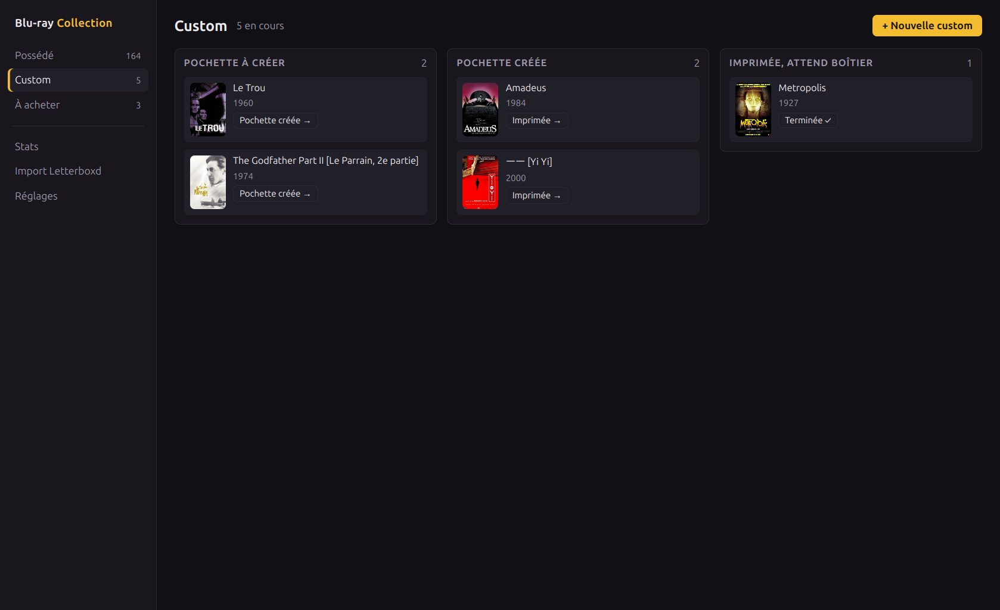
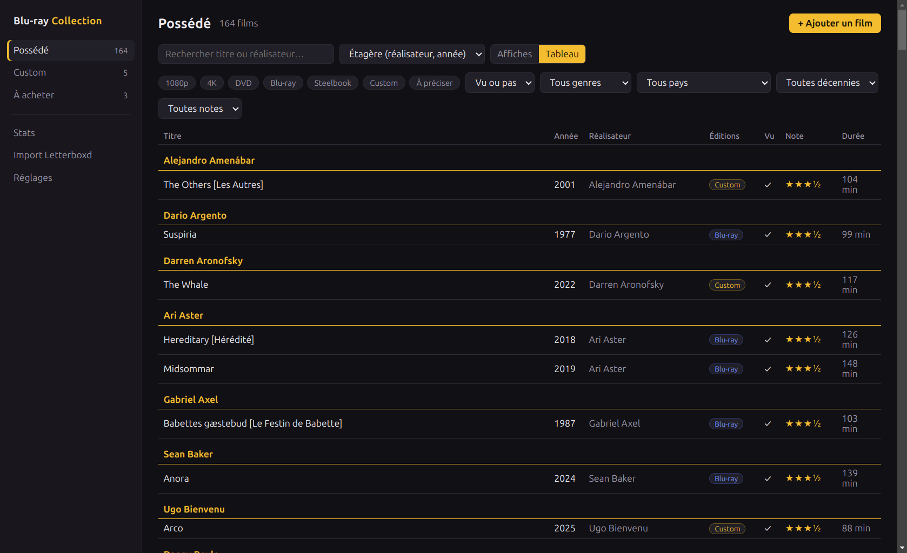

Ta collection de films physiques, rangée comme ton étagère. Fiches TMDB, données Letterboxd, statistiques — tout reste sur ton ordinateur.

Ce que tu possèdes, ce que tu fabriques, ce que tu veux acheter — et ce que tu en as pensé.
Blu-ray, 4K, DVD, steelbook, custom : un même film peut être possédé dans une édition et voulu dans une autre.
Par nom de famille du réalisateur puis par année, avec un intercalaire par réalisateur. Clé de rangement manuelle pour les cas particuliers.
Pochette à créer, créée, imprimée en attente de boîtier, terminée : chaque jaquette avance d'un clic.
Recherche un film, choisis l'édition : affiche, réalisateurs, genres, pays, durée et synopsis arrivent tout seuls.
Vus, notes, critiques, likes, watchlist. Réimporte quand tu veux : seules les données Letterboxd sont remplacées.
Formats, réalisateurs, décennies, possédés pas encore vus, films adorés mais pas encore achetés, les plus revus…
Une interface sombre, centrée sur les affiches.




Tes données restent dans un fichier local (collection.json), avec une sauvegarde avant chaque import. Le seul service contacté est TMDB, pour les fiches et les affiches.